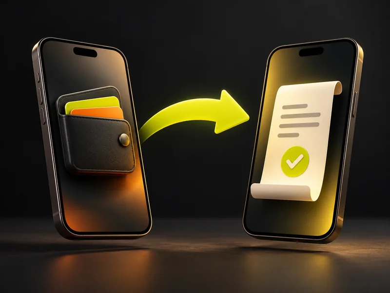

إنت تحدد جاهزيتك
غيّر حالتك بين متاح وغير متاح، واستقبل الطلبات لما تكون جاهز وحسابك مؤهل.
طلبات رحلات، ملاحة، وحسابات واضحة. كل اللي تحتاجه في يومك على السكوتر، في تطبيق واحد.
تحميل APK مباشرةًاكتشف تجربة الكابتنغيّر حالتك بين متاح وغير متاح، واستقبل الطلبات لما تكون جاهز وحسابك مؤهل.
من الطلب لنقطة الركوب والوصول، تابع مراحل الرحلة وتفاصيلها من مكان واحد.
راجع أرباح الرحلات والعمولة والمستحقات، وتابع حالة التحصيل بوضوح.
أدوات معمولة لشغل الكابتن، من أول طلب لآخر حساب.
شوف تفاصيل الطلب، اقبل الرحلة، وتابع نقطة الركوب والوجهة وحالة الدفع. وسجل رحلاتك موجود ترجع له.
اتجه لنقطة الركوب والوجهة من داخل التطبيق، مع إرشادات صوتية بالعربي ووقت وصول تقديري.
تابع ملخص اليوم والأسبوع والشهر، وصافي أرباحك والعمولة والرصيد والمبالغ المستحقة.

سجّل التحويل للمحفظة المتاحة، وتابع تأكيد الاستلام أو طلب المراجعة وحالة طلباتك.
ارفع صورتك والبطاقة ورخص القيادة والسكوتر، وراجع حالة كل مستند وملاحظات المراجعة.
تابع تنبيهات الرحلات والإشعارات من داخل التطبيق، وراجع حسابك وبياناتك من ملفك الشخصي.
اختار متجر هاتفك، حمّل V.Go Captain، وسجّل بياناتك ورقم هاتفك.
ارفع المستندات المطلوبة وتابع نتيجة المراجعة وأي بيانات محتاجة تحديث.
بعد استيفاء متطلبات الحساب، فعّل الموقع وخليك متاح لاستقبال أول طلب رحلة.
اعرف حصيلة رحلاتك، وافهم الفرق بين اللي حصّلته نقدًا واللي اتدفع إلكترونيًا. تفاصيل تساعدك تتابع يومك بثقة.
الأرباح بتختلف حسب الرحلات المكتملة وشروط حسابك؛ مفيش دخل ثابت مضمون.
V.Go Captain مخصص للكباتن لإدارة الرحلات والملاحة والحسابات. حجز الرحلات للركاب بيكون من تطبيق V.Go الخاص بالعملاء.
سجّل بياناتك، وارفع صورتك الشخصية وصور البطاقة ورخصة القيادة ورخصة السكوتر حسب المطلوب داخل التطبيق. استقبال الرحلات مرتبط بحالة التحقق واستيفاء متطلبات الحساب.
لإتاحة التحميل لحساب Google المستخدم في المتجر. اختار الحساب أو اكتب بريده، وانتظر تأكيد التفعيل، ثم اضغط فتح Google Play. لو عندك أكثر من حساب على الهاتف، تقدر تضيف حتى ٣ حسابات إضافية.
أيوه، تقدر تحمّل V.Go Captain من زر App Store. تفعيل Google Play خاص بتحميل أندرويد فقط.
من الحسابات تراجع ملخص الأرباح والعمولة والرصيد والمستحقات. وفي التحصيل تسجّل التحويل وتتابع حالته باستخدام الخيارات المتاحة لحسابك.
الموقع بيساعد على استقبال الرحلات وأنت متاح، وتحديد مكان الركوب والملاحة ومتابعة الرحلة. تقدر تدير الأذونات من إعدادات هاتفك، لكن تعطيل الموقع ممكن يمنع وظائف الرحلات.